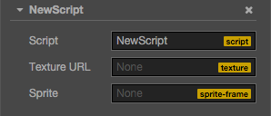
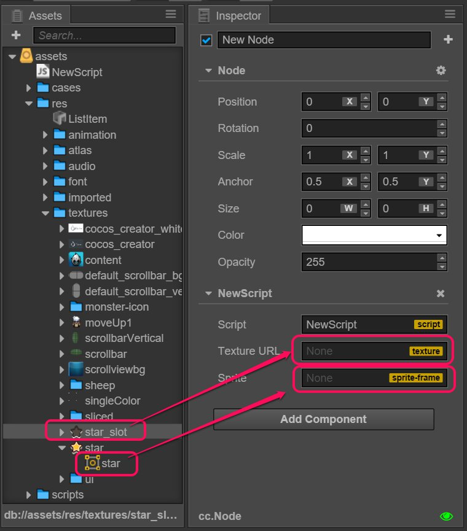
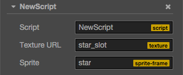
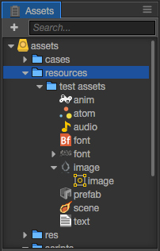

Acquire and load asset
Cocos Creator has a whole set of uniform asset management mechanisms. In this tutorial, we will introduce
- Classification of assets
- How to set assets in the Properties panel
- How to dynamically load Asset
- How to dynamically load Raw Asset
Classification of assets
Assets currently can be classified into two different types, one type is called Asset, the other is called Raw Asset.
Asset
Most assets like cc.SpriteFrame, cc.AnimationClip and cc.Prefab all belong to Asset. The loading of Asset is uniform and automatic. Assets that rely on each other can be preloaded automatically.
For example, when the engine is loading the scene, it will first automatically load the assets linked to the scene and if these assets are linked to other assets, then these other assets will also be loaded first. Only when the loading is complete will the loading of the scene be finished.
Therefore, as long as you get an Asset object, then this object must be the one that has finished loading and can access all the asset data directly through the attributes of this object. If you are going to use these assets in the engine, the Asset object that the engine API receives must be a loaded one.
The script can define an Asset properties:
// NewScript.js
cc.Class({
extends: cc.Component,
properties: {
spriteFrame: {
default: null,
type: cc.SpriteFrame
},
}
});
Raw Asset
The object received by the existing API previously in Cocos2d is not the Asset object mentioned above but a URL presented by a character string. These former asset types that the API uses are called Raw Assets. cc.Texture2D, cc.Font and cc.AudioClip are all Raw Assets. If you are going to use Raw Assets in the engine, all you have to do is to pass the URL of the asset to the engine API, then the engine interior will automatically load the assets represented by this URL.
If you are going to declare a Raw Asset attribute type as cc.Texture2D in CCClass, you may want to define it first:
cc.Class({
extends: cc.Component,t a
properties: {
textureURL: {
default: null,
type: cc.Texture2D
}
}
});
The problem with writing in this way is that textureURL in the code is actually a character string rather than a living example of cc.Texture2D. To avoid confusing the two types here, use url: cc.Texture2D rather than type: cc.Texture2D when declaring the Raw Asset attribute in CCClass.
cc.Class({
extends: cc.Component,
properties: {
textureURL: {
default: "",
url: cc.Texture2D
}
}
});
How to set assets in the Properties panel
No matter whether using Assets or Raw Assets, as long as you define the type in the script, you can set assets easily in the Properties panel. Hypothetically, we could have a component like this:
// NewScript.js
cc.Class({
extends: cc.Component,
properties: {
textureURL: {
default: "",
url: cc.Texture2D
},
spriteFrame: {
default: null,
type: cc.SpriteFrame
},
}
});
Here is how it looks like in the Properties panel after adding it into the scene:

Then we drag an image and a SpriteFrame separately from Assets to the corresponding attribute in the Properties panel:

The result is as follows:

In this way you can get the set asset directly from the script:
onLoad: function () {
var spriteFrame = this.spriteFrame;
var textureURL = this.textureURL;
spriteFrame.setTexture(textureURL);
}
Although it is very straight forward to set assets in the Properties panel, assets can only be pre-set in the scene without dynamic switching. If you need dynamic switching, you need to check the following contents out.
How to dynamically load
All resources that require dynamically loaded via script, must be placed under resources folder or its subfolders,
resources need to be manually created in the assets folder and must be located in the root directory of the assets,
like this:

The image/image, prefab, anim, font is a common Asset, and image, audio is a common Raw Asset.
Inside
resourcesfolder resources, can be associated with dependence to other resources outside the folder, or resource reference could also be an external scene to. Project build time, but was released in build panel selected scenarios,resourcesall the resources folder,resourcesfolders associated with their dependence on external resources are exported. So, if a resource does not need directly from the script dynamic loading, it won't be in theresourcesfolder.
How to dynamically load Asset
Creator provides cc.loader.loadRes the API to load specific Asset that is located under the Resources directory.
And cc.loader. load difference is that loadRe should only load a single Asset.
Invoke, you only need to pass a relative path to the resources, and Not at the end of the path containing the file name extension.
// load Prefab
cc.loader.loadRes("test assets/prefab", function (err, prefab) {
var newNode = cc.instantiate(prefab);
cc.director.getScene().addChild(newNode);
});
// load AnimationClip
cc.loader.loadRes("test assets/anim", function (err, clip) {
myNode.getComponent(cc.Animation).addClip(clip, "anim");
});
// load SpriteAtlas (Atlas), and get one of them SpriteFrame
// Note Atlas resource file (plist) usually of the same name and a picture file (PNG) placed in a directory,
// So should need to in the second parameter specifies the resource type.
cc.loader.loadRes("test assets/sheep", cc.SpriteAtlas, function (err, atlas) {
var frame = atlas.getSpriteFrame('sheep_down_0');
sprite.spriteFrame = frame;
});
Independent of load SpriteFrame
After the photo settings for the Sprite will be in the Resource Manager to generate a corresponding SpriteFrame. But if
test assets/image is loaded directly, and the type will be cc.Texture2D. You must specify the second parameter is the type of resource, cc.generated can be loaded into the picture SpriteFrame.
// load SpriteFrame
cc.loader.loadRes("test assets/image", cc.SpriteFrame, function (err, spriteFrame) {
myNode.getComponent(cc.Sprite).spriteFrame = spriteFrame;
});
If you specify a type parameter, you will find the specified resource type in the path. When you are in the same path includes multiple names simultaneously under a resource (for example, contains both player.clip and player.psd), or the need to obtain a "resource" (for example, gets Texture2D SpriteFrame generated), should need to declare types.
Resource Release
loadRes loaded in a single resource if you need to release, You can call cc.loader.releaseRes,
releaseRes incoming one with loadRes the same path parameter, type parameters are not supported
cc.loader.releaseRes("test assets/anim");
Also, You can also use cc.loader.releaseAsset to release the instance of a specific Asset.
cc.loader.releaseAsset(spriteFrame);
How to dynamically load Raw Asset
Raw Asset can be loaded directly from a remote server using a URL, you can also dynamically loaded from the item. In the case of remote loading, The original Cocos2d constant loading method, using cc.loader.load can be. Raw Asset to the project, load the same way as Asset:
// load Texture, don't add extension
cc.loader.loadRes("test assets/image", function (err, texture) {
...
});
cc.url.raw
After the success of Raw Asset loading, if you need to pass some form of URL API,
you still need to give the full path.You need to use cc.url.raw converted to a URL:
// The original URL will complain! File not found
var texture = cc.textureCache.addImage("assets/res/textures/star.png"); // Error! File not found
// By cc.url.Raw, requiring you to declare resources directory and file name extension
var realUrl = cc.url.raw("res/textures/star.png");
var texture = cc.textureCache.addImage(realUrl); // OK!
Resource bulk loading
cc.loader.loadResAll can load multiple resources under the same path:
// loading all resource in the test assets directory
cc.loader.loadResAll("test assets", function (err, assets) {
// ...
});
// load all SpriteFrame in the sheep.plist atlas
cc.loader.loadResAll("test assets/sheep", cc.SpriteFrame, function (err, assets) {
// assets is a SpriteFrame array already contains all SpriteFrame.
// and loadRes('test assets/sheep', function (err, atlas) {...}) The entire SpriteAtlas object is obtained.
});